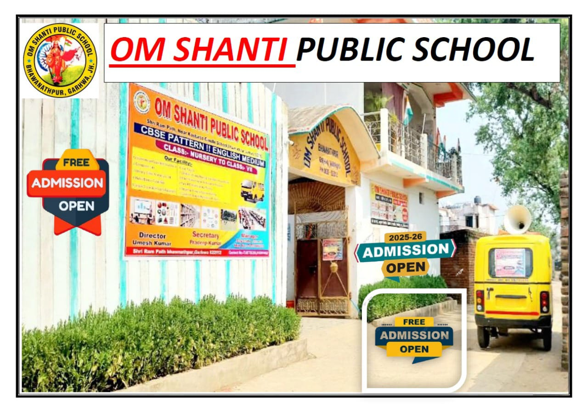
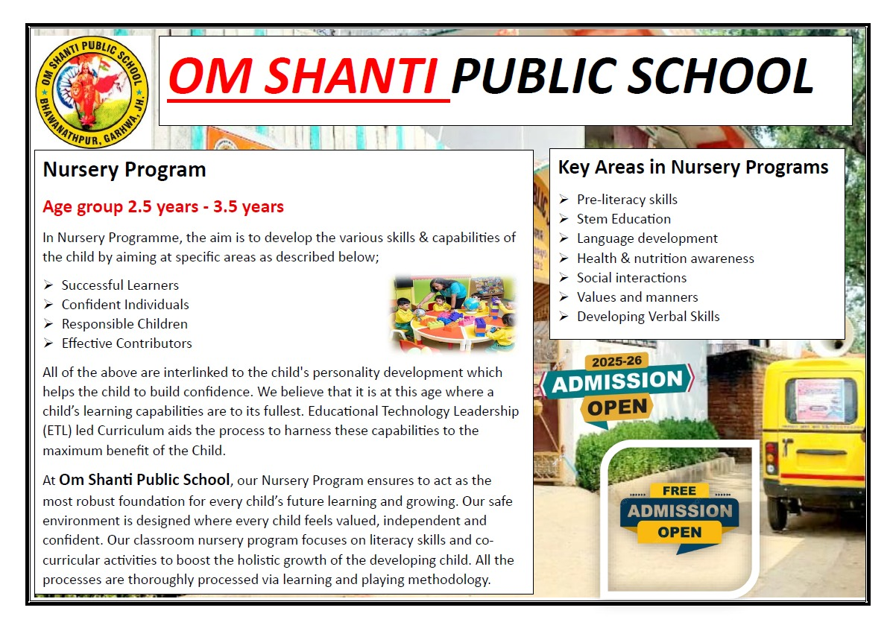
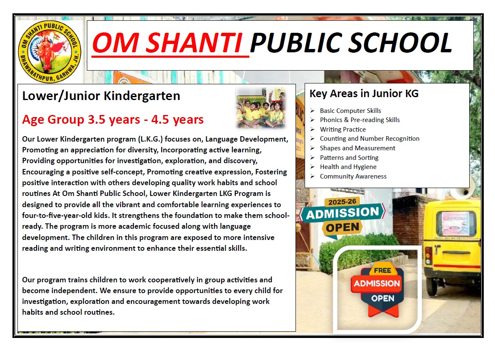
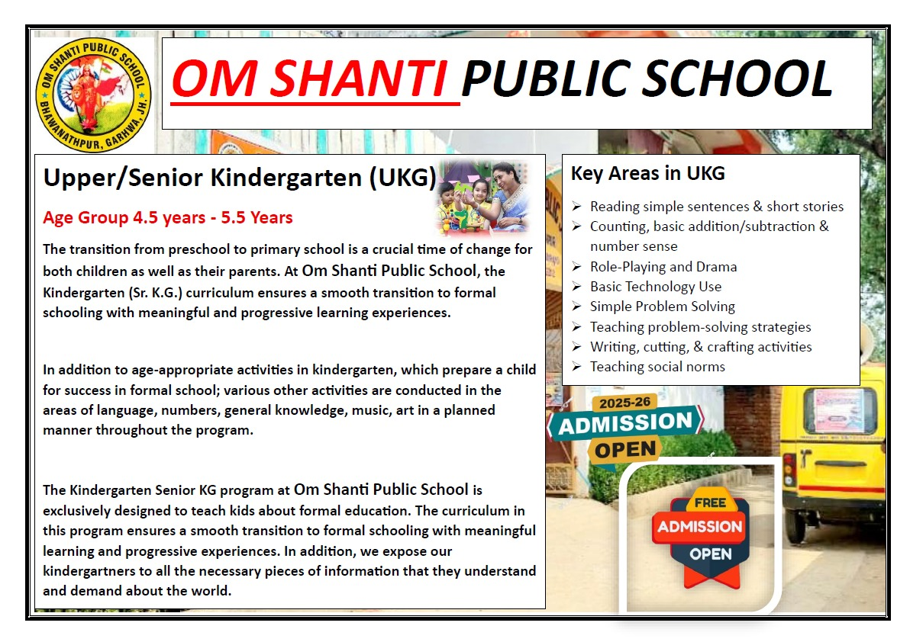
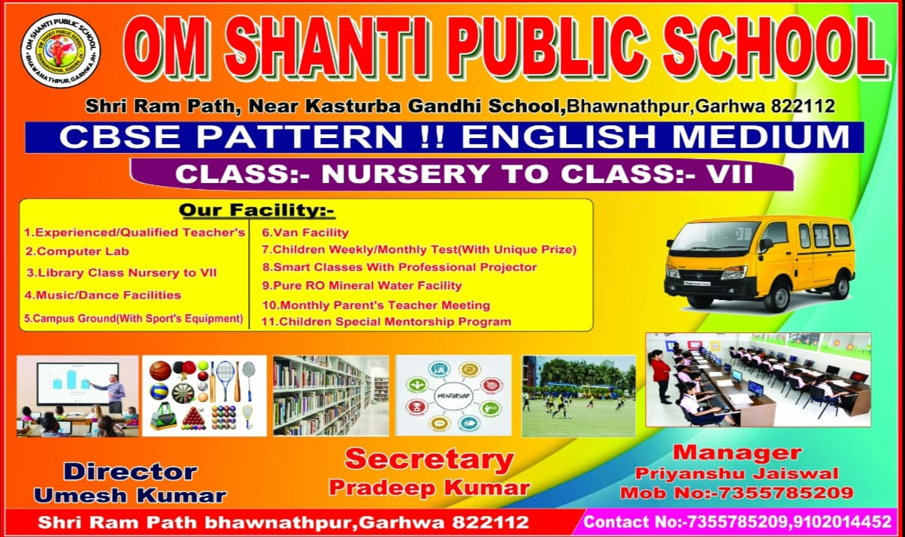

OM SHANTI PUBLIC SCHOOL BHAWANATHPUR GARHWA JH 822112

Home Om Shanti Public School Bhawanathpur
Welcome to Om Shanti Public School, Which assures you of your child's bright future.
We do all the hard work with complete dedication so your child can grow under the proper guidance. For the last 3 years. We have upheld our motto-Education for Life.
We Strive to provide it through all possible means so that parents no longer have to worry about their child'S Educational journey.
Special Programme
Nursery Program

Age group 2.5 years - 3.5 years
In Nursery Programme, the aim is to develop the various skills & capabilities of the child by aiming at specific areas as described below;
➢
Successful Learners
➢
Confident Individuals
➢
Responsible Children
➢
Effective Contributors
All of the above are interlinked to the child's personality development which helps the child to build confidence. We believe that it is at this age where a child’s learning capabilities are to its fullest. Educational Technology Leadership (ETL) led Curriculum aids the process to harness these capabilities to the maximum benefit of the Child.
At Om Shanti Public School, our Nursery Program ensures to act as the most robust foundation for every child’s future learning and growing. Our safe environment is designed where every child feels valued, independent and confident. Our classroom nursery program focuses on literacy skills and co-curricular activities to boost the holistic growth of the developing child. All the processes are thoroughly processed via learning and playing methodology.
Key Areas in Nursery Programs
➢
Pre-literacy skills
➢
Stem Education
➢
Language development
➢
Health & nutrition awareness
➢
Social interactions
➢
Values and manners
➢
Developing Verbal Skills
Lower/Junior Kindergarten

Age Group 3.5 years - 4.5 years
Our Lower Kindergarten program (L.K.G.) focuses on, Language Development, Promoting an appreciation for diversity, Incorporating active learning, Providing opportunities for investigation, exploration, and discovery, Encouraging a positive self-concept, Promoting creative expression, Fostering positive interaction with others developing quality work habits and school routines At Om Shanti Public School, Lower Kindergarten LKG Program is designed to provide all the vibrant and comfortable learning experiences to four-to-five-year-old kids. It strengthens the foundation to make them school-ready. The program is more academic focused along with language development. The children in this program are exposed to more intensive reading and writing environment to enhance their essential skills.
Our program trains children to work cooperatively in group activities and become independent. We ensure to provide opportunities to every child for investigation, exploration and encouragement towards developing work habits and school routines.
Key Areas in Junior KG
➢
Basic Computer Skills
➢
Phonics & Pre-reading Skills
➢
Writing Practice
➢
Counting and Number Recognition
➢
Shapes and Measurement
➢
Patterns and Sorting
➢
Health and Hygiene
➢
Community Awareness
Upper/Senior Kindergarten (UKG)

Age Group 4.5 years - 5.5 Years
The transition from preschool to primary school is a crucial time of change for both children as well as their parents. At Om Shanti Public School, the Kindergarten (Sr. K.G.) curriculum ensures a smooth transition to formal schooling with meaningful and progressive learning experiences.
In addition to age-appropriate activities in kindergarten, which prepare a child for success in formal school; various other activities are conducted in the areas of language, numbers, general knowledge, music, art in a planned manner throughout the program.
The Kindergarten Senior KG program at Om Shanti Public School is exclusively designed to teach kids about formal education. The curriculum in this program ensures a smooth transition to formal schooling with meaningful learning and progressive experiences. In addition, we expose our kindergartners to all the necessary pieces of information that they understand and demand about the world.
Throughout the program, various other activities are conducted in the areas
Key Areas in UKG
➢
Reading simple sentences & short stories
➢
Counting, basic addition/subtraction & number sense
➢
Role-Playing and Drama
➢
Basic Technology Use
➢
Simple Problem Solving
➢
Teaching problem-solving strategies
➢
Writing, cutting, & crafting activities
➢
Teaching social norms
Management Message

UMESH KUMAR(FOUNDER,DIRECTOR)
The motive behind the establishment of OM Shanti Public School is to educate the children through pursuing them quality based education and to make them aware to the finer aspect of life. Global development of the students is needed in order to meet the challenge and adversities of life.
It is the first and foremost condition for the quality-based education is to select better school. It is obligation of whole generation to nourish and work for betterment of the school. Keeping in mind all round development of child we oftenly organize competition on different aspects. As per need of the hour focus should be given on personality development of the students so we encourage students through award and scholarship. We are highly thankful to those who support and co-operate us to achieve prestigious position of the school and hope for the glorious and prosperous future of the students
PRIYANSHU JAISWAL(MANAGER)
Dear Students, Parents, and Esteemed Members of the School Community, Our school is a place where every student is valued, every teacher inspires, and every family is a partner in the journey of education. At OM Shanti Public School, we believe in fostering a positive and inclusive environment that nurtures not only academic excellence but also character, creativity, and collaboration. Our mission is to equip each child with the skills and mindset needed to thrive in an ever-evolving world. We encourage our students to dream big, take on challenges with courage, and always strive for personal and collective success. To our parents and guardians, your partnership is vital, and together, we can ensure every child reaches their full potential. Let us embrace the opportunities ahead with enthusiasm, kindness, and a commitment to excellence. Here's to a year filled with learning, joy, and memorable moments!
OM SHANTI PUBLIC SCHOOL
Bhawanathpur.
PRADEEP KUMAR(SECRETARY)
I feel very proud to be a part of the OM Shanti Public School. The school aim is to ensure that its students achieve their highest academic and personal potential. It also aims to give them a firm foundation based upon understanding of Indian culture, society and ideas. however, the school aim is to provide base to build more globally aware citizens as the requirement of the 21st century. I feel very grateful to you all that the school we have established is unique, beautiful and especially well equipped. I realized that the school is for more than just a building and other things. A truly successful school is one where staff, students and parents come together to form a complete and harmonious community. I think that this is something which can only be achieved if it is renewed each and every day. I hope that all of you will want to be a part of this community and to be a part of vision which we all share at the OM Shanti Public School.
OM SHANTI PUBLIC SCHOOL
Bhawanathpur.
Our Vision and Mission
Our Vision and Mission (OSPS_BHAWANATHPUR)
Om Shanti Public School Bhawanathpur strives to be a
school with a difference-where the emphasis lies not
only in garnering academic excellence but also to
create a stimulating ambiance that directs each and
every student toward a brighter future.
We think of our students as leaders and the school
plays the part of being the facilitator of knowledge,
creativity, and moral values.
Our mission is to make holistic education accessible to
the new generation who are the future of our country.
-------------------------OSPS_BHAWANATHPUR----------------------------------
Our Vision Regarding AI (OSPS_BHAWANATHPUR)
ARTIFICIAL INTELLIGENCE
Career and future of the student depends on their academic
performance. Our aim is to provide conceptual and in-depth
training to make their base strong as well as scoring good marks
which helps them to get admission in good school, college and
university. We want to grow in terms of quality and then quantity
STUDENT SUCCESS IS OUR ACHIEVEMENT. We aim to provide a
user-friendly environment to our students with latest hardware and
software technologies. Students are provided with flexible practical
timings as per the convenience. At OM SHANTI PUBLIC SCHOOL,
each student is given a special attention and importance. Our aim is
to provide best education so that a student can have bright career
in IT field.
-------------------------OSPS_BHAWANATHPUR----------------------------------
Co-Curricular Activities
Co-curricular Activities- Session-2025-26
Even though Co-curricular Activities fall outside the realm of academics, yet they form an integral part of the curriculum. It has always nurtured and supported academics. Apart from developing the psychomotor domain, student centric activities always cater to the need of mental tranquillity, socializing as well as pragmatic approach to academics. Fields like Art and Craft, Theatrics, Public Speaking and Music and Dance assist in the formation of character and attitude.
➢
House System
SL.NO
HOUSE NAMES
COLOURS
HOUSE-POST
1.
Bhagat Singh House
[BS HOUSE]
RED
CAPTAIN,VICE-CAPTAIN,PREFECT
2.
Subash Chandra Bose
[SCB HOUSE]
GREEN
CAPTAIN,VICE-CAPTAIN,PREFECT
3.
Lal Bahadur Shastri House
[LBS HOUSE]
BLUE
CAPTAIN,VICE-CAPTAIN,PREFECT
4.
Sardar Vallabhbhai Patel House
[SVP HOUSE]
YELLOW
CAPTAIN,VICE-CAPTAIN,PREFECT
Even though Co-curricular Activities fall outside the realm of academics, yet they form an integral part of the curriculum. It has always nurtured and supported academics. Apart from developing the psychomotor domain, student centric activities always cater to the need of mental tranquillity, socializing as well as pragmatic approach to academics. Fields like Art and Craft, Theatrics, Public Speaking and Music and Dance assist in the formation of character and attitude.
Disciplinary Guidelines
Disciplinary Guidelines for Students
1.
Discipline is the law of nature. Without it, nothing works. Inculcating discipline amongst children is the most significant aspect of education and is not confined to school alone. Parents, too, must co-operate with the school in observing these norms.
2.
Bullying and the use of foul language are punishable offences, whether in or out of school. Students found indulging in the same will be expelled.
3.
Students should not write, scratch or engrave graffiti on desks, chairs, walls and other surfaces.
4.
Running and shouting in the school premises is not allowed.
5.
A student who is found using unfair means will be awarded zero in the subject and will be issued a strict warning.
6.
Any violation of this rule will result in strict disciplinary action and expulsion from school.
Extra-Curricular Activities
Holistic Development: Enhances creativity, leadership, and teamwork skills beyond academics.
➢
Improves Social Skills: Encourages interaction, collaboration, and confidence building.
➢
Physical & Mental Well-being: Sports, arts, and cultural activities promote fitness and reduce stress.
➢
Enhances Time Management: Helps students balance academics with hobbies and interests.